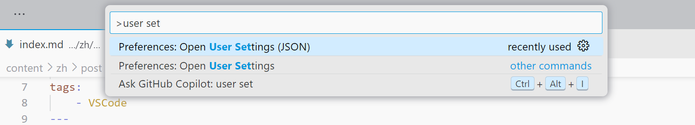
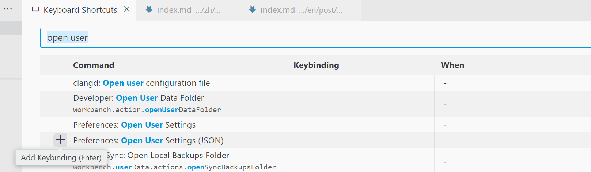
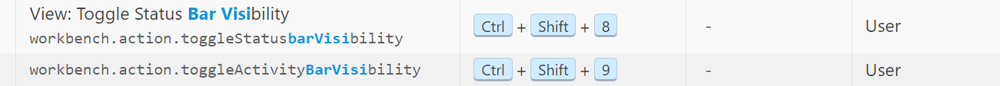
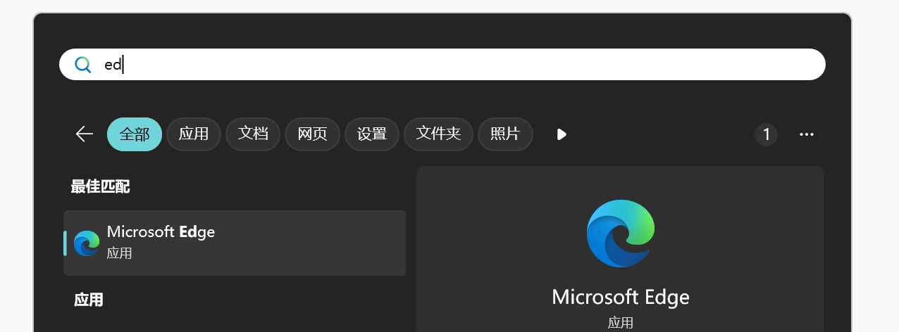
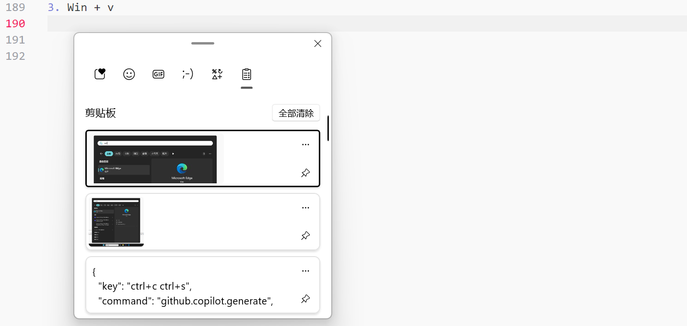

让工具更趁手✨
你的 VSCode 助理
Ctrl + Shift + P
如果你需要在 VSCode 里做某件事情，可以按下 Ctrl + Shift + P 搜索，比如你想更改设置，但是手动打开 settings.json 很麻烦，那么你可以：
按下回车之后，settings.json 就在你眼前了，如果需要经常执行此动作，那么可以在 Keyboard Shortcuts（Ctrl-k Ctrl-s 打开）中为它绑定快捷键：
布局
隐藏 Activity Bar 和 Status Bar
我为开关 Activity Bar 和 Status Bar 配置了图中的快捷键，隐藏此二者可以让界面更简洁.
并置终端 tab 和代码 tab
Ctrl+Shift+P → 在命令面板中检索 Terminal: Move Terminal to Editor Area ，即可将当前终端放置到 Editor Area，其他类似操作还有 Move Terminal to Panel, Create New Terminal in Editor Area…当然，可以为你经常使用的操作绑定快捷键.
一种适用的场景是：如果你在学习某种编程语言，而这种语言（比如 Haskell, Lisp, Python…）刚好有REPL，你就可以在 Editor Area 切分，一半放代码，一半放 Terminal REPL，如果需要，可以编辑文件，然后在 REPL 中导入代码文件（像Haskell ghci中的:l foo.hs），这样就很方便，可以通过 Ctrl+1/Ctrl+2 在代码 tab 和终端 tab 之间做 Focus 的切换.
还有一种类似的实现：通过 Ctrl+Shift+B 打开 Secondary Side Bar，把终端拖到 Secondary Side Bar.

编辑区域
彩虹括号导引线
在 Settings(GUI) 中键入 @id:editor.bracketPairColorization.enabled @id:editor.guides.bracketPairs，选择你需要的选项，editor.bracketPairColorization.enabled 是默认启用的，editor.guides.bracketPairs 是默认关闭 (false) 的，可以选择 true 或者 active 启用， true 的效果是所有括号都配有引导线， active 的效果是只有最接近光标的外层括号有引导线，我觉得 active 就足够了，效果如下：
Ctrl+Shift+\，可以在距离光标最近的配对括号之间跳转，可以用来检查表达式嵌套的层级，对应 Vim Normal Mode 下的%. 如果你的 Focus 在 Terminal，那么可以使用 Ctrl+Shift+\ 在终端 Tab 之间跳转.
快捷键
-
Tip
将光标悬停在 GUI 的 button 上，如果该 button 有对应的快捷键，弹出的悬窗会呈现快捷键信息（很多程序都遵循这个设计哲学），所以如果发现自己经常点击某个键，不妨停下来看看它对应的热键是什么.
-
Ctrl-b：toggle side bar.
side bar 是文件浏览器、插件市场搜索页所占据的板块.
这里对应的一个故事是，有人给 VSCode 提了一个issue，希望 VSCode 提供一个类似
toggleExplorerVisibility配置项，然后一个用户回复 “Ctrl-B to toggle side bar” 并关闭了此issue. 为什么我会知道这件事情，因为我也以为我的需求是toggleExplorerVisibility，结论是：明确每个组件的称呼很重要😣. -
Alt-←/→：回退到上一光标位置/前进到下一光标位置
比较有用的一个情景是：和 F12 配合，在函数的调用链里导航.
-
Ctrl-[/]：对光标所在行左移/右移缩进.
同 Vim Visual Mode 下的
>/<. Vim 的这个键位我用着一直不是很顺，因为选中之后只能进行一次操作，如果想再做一次缩进，那要再选一次，虽然是可以2 >这样向右缩进两个tab，但是对我来说还是没有那么顺. -
Alt-↑/↓：上移/下移光标所在行.
-
Shift-Alt-f: format 代码，前提是配置好了 formatter.
-
Ctrl-(Shift-)Enter: 在当前光标所在行下(上)方新建一行，光标跳转到新行行首.
同 Vim Normal Mode 下的
o(O).来自 2025-02-19 的更新，VSCode 更新后，Copilot Suggestions （Github Copilot: Open Completion Panel）占据了 Ctrl-Enter，可以在 Keyboard Shortcuts 做修改. -
Ctrl-k Ctrl-w
关闭 Editor Area 中的所有 tab.
-
冲突避免
直接的冲突都会在进行键位绑定的时候提示你，但是下图这样的情况，即 leading key = 其他快捷键，是不会显示冲突的，但这时候 Copy 事实上已经废了，因为 Ctrl-c 将作为 leading key，按下它后 VSCode 将继续等待 chord key，你可以在状态栏中观察这个事实.

扩展
-
Bluloco Light Theme (Author: Umut Topuzoğlu)
非常漂亮的主题.
-
Remove empty lines (Author: Alexander)
删除选区内的所有空行. 可以通过 Ctrl + Shift + P 调用，也可以为其绑定快捷键.
杂项
一些写在 User Settings (JSON) 里的小配置，包含:
-
改变悬停窗口（如 Language Server 提供的函数描述）的背景色;
-
改变默认缩放等级;
-
彩虹括号引导线设置.
{
"workbench.colorCustomizations": {
"editorHoverWidget.background": "#edeeee", // 设置悬停提示的背景颜色
},
"window.zoomLevel": 1,
"editor.guides.bracketPairs": "active"
}
一些 Windows 的实用快捷键
（🪟 代表 Windows 徽标键.）
-
🪟
按下 Windows 徽标键后，键入文本可以对应用 / 设置 / 文件 / … 进行搜索，找到匹配项后回车打开.
 -
🪟 + 方向键
Win + ↑：当前 Focus 窗口全屏
Win + ←/→：窗口左右贴靠
Win + ↓：退出全屏 / 最小化 -
🪟 + v
展示剪切板的历史记录（不知道最大容量是多少，但是关机会丢失记录），同时可以在这里选择输入表情、符号、颜文字等.
 -
Alt-Tab
在当前桌面切换窗口.
-
Ctrl-(Shift-)Tab
在当前应用（浏览器、VSCode）切换 tab，不同应用对待选 tab 的排序不同，有些按访问顺序排列（VSCode），有些按生成顺序排列（edge）.
-
Alt-F4
关闭当前窗口.
-
Ctrl-w
edge 中关闭当前 tab.